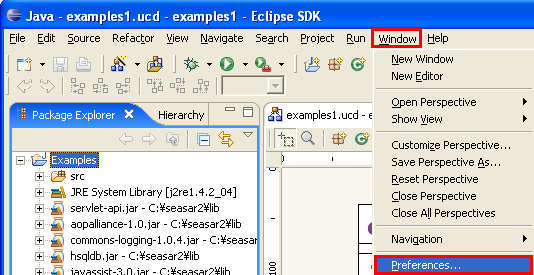
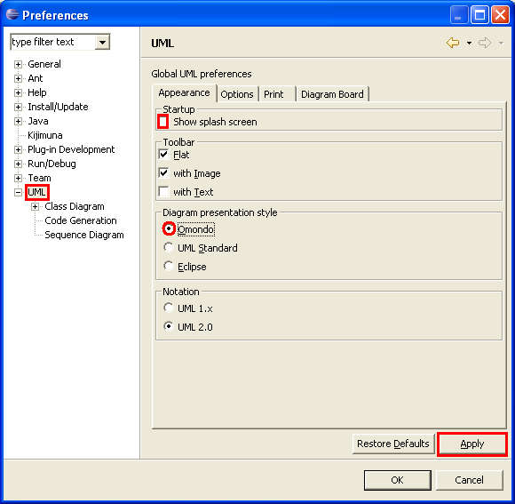
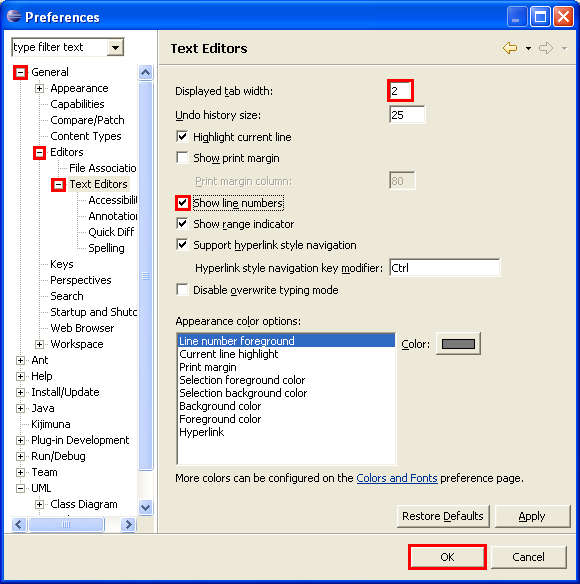
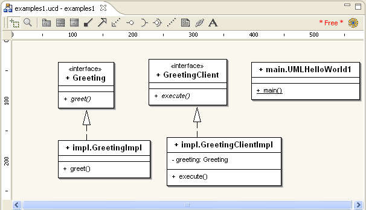
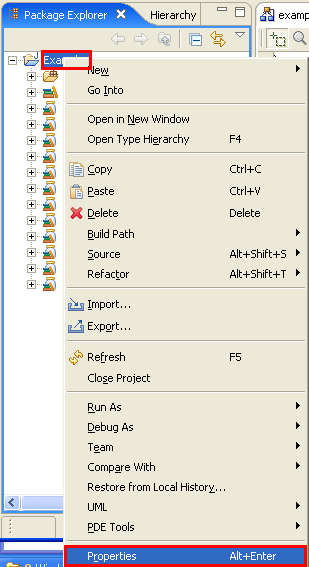

Debug Setup by H.Ozawa
To debug Seasar, we will first setup Eclipse preference.
Select Window - Preferences....

Select UML. This is a preference, but it bothers me to see the splash screen each time so I usually uncheck Show splash screen.
I usually work with the "Eclipse" presentation style, but for now let's set to to Omondo.
Select the Apply button.

Error messages usually display which line number has the error. To track the error, we'll display the line number.
Select General - Editors - Text Editors. Set "Displayed tab width" to 2 and check the Show line numbers.
Select the OK button.

Class diagram should now be in UML notation.

We'll now activate Kijimuna to find any dicon errors.
Right click on the package - in this example, right click on examples1 and select Properties in the context menu.

Select Kijimuna and check on Seasar2 project. Select the OK button.